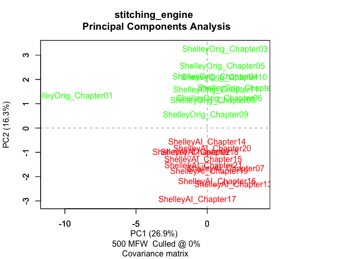
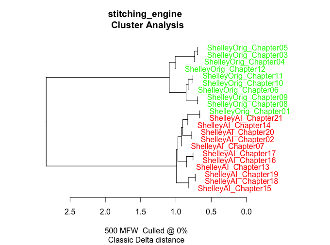

Frankenstein Reimagined
/ Project Overview
This project evaluates the capacity of fine-tuned LLMs to replicate the subconscious syntactic signatures of 19th-century prose. By fine-tuning Llama 3.1-8B on Mary Shelley’s works, the narrative was reimagined to explore themes of moral accountability and aristocratic impunity, shifting the focus from Victor’s flight response to sustained responsibility.
/ Research Poster

The poster outlines the methodology of utilizing Unsloth and QLoRA to refine the model's stylistic "filter". It highlights the correction of historical biases by providing Elizabeth Lavenza with a "voice" and intellectual agency through first-person journaling.
Key research questions focused on how altering Victor's sense of responsibility changes the novel's thematic resolution and how stylometric analysis can detect these AI interventions.
/ Evaluation & Stylometric Analysis
To validate the mimicry, I utilized the 'stylo' package in RStudio (as instructed in the Digital Humanities curriculum) to perform Principal Component Analysis (PCA) and Cluster Analysis.
/ PCA Analysis

The PCA plot shows a distinct separation along the PC2 axis, effectively distinguishing Shelley’s original prose (positive section) from the AI-generated chapters (negative section).
/ Cluster Analysis

The resulting dendrogram depicts a definitive structural bifurcation. While the AI successfully adopted the Gothic vocabulary, it failed to replicate the author’s distinctive syntactic rhythm.
/ Project Report
Download the full academic report detailing the humanities significance and methodology.